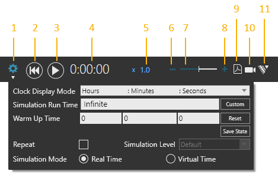

The Simulation controls at the top of the 3D world allow you to start, stop, reset, record and customize a simulation.

| 1. | Settings |
| 2. | Reset |
| 3. | Play/Pause |
| 4. | Clock |
| 5. | Speed |
| 6. | Decrease Speed |
| 7. | Speed Slider |
| 8. | Increase Speed |
| 9. | Record 3D PDF |
| 10. | Record Video |
| 11. | Record Animation |
Simulation settings allow you to customize the execution of a simulation.
| Name | Description |
| Clock Display Mode | Defines the format of simulation clock. |
| Custom | Allows you to define a simulation run time previously set to run at infinity. |
| Repeat | Turns on/off the looping of a simulation with a defined runtime or end. |
| Reset | Resets warm up time to zero. |
| Save State | Saves the current location and configuration of all components in 3D world. By default, this is automatically done at the start of a simulation in order to reset components to their initial simulation state. |
| Simulation Level | Indicates the global accuracy setting for simulating component
movements.
Default Detailed Balanced Fast |
Simulation Mode |
Defines the time mode of the simulation. Real Time Virtual Time |
| Simulation Run Time | Defines the runtime of simulation. |
| Warm Up Time | Defines a point in time to start simulation. Generally, warm up time is used to start collecting statistics when components are at a preferred state. |
The speed of a simulation can run in virtual time or be set to advance in real time and emulate real-time motion planner.
When you reset a simulation, the layout of the 3D world returns to its initial state.